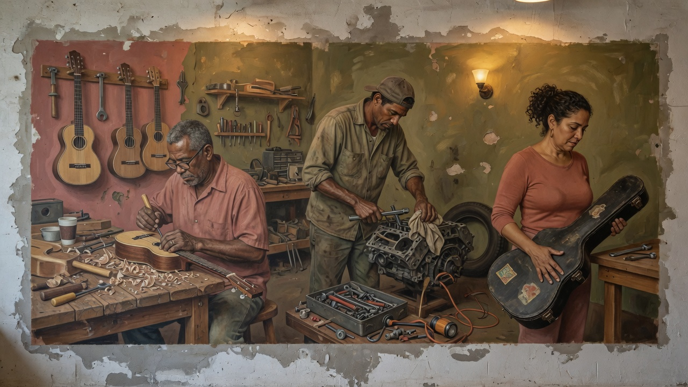
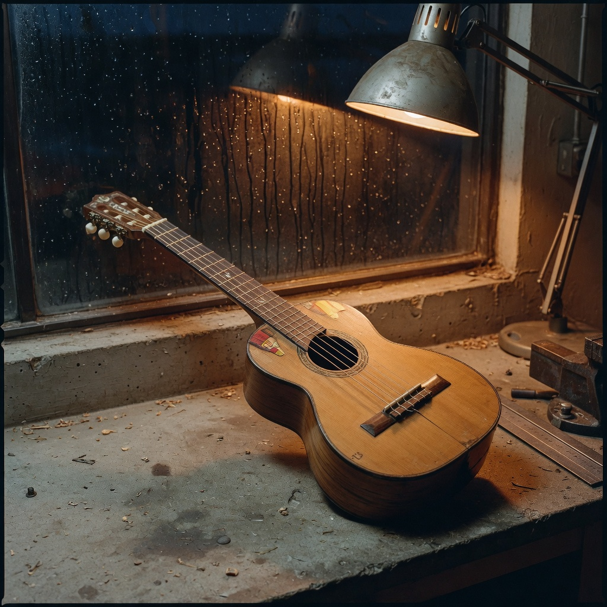

Puerto Rico
Architecture, music, murals, Spanish on the walls, materials. Not a flag shop. Not a travel guide.
The making of
Aim trainers measure the mouse. Matches punish the whole body. I wanted a room where the first bullet is the whole conversation — stop, then fire — and a place that feels like home instead of a warehouse.
Ian Ferraro Crespo. Añasco is the hometown the lab remembers. No extra biography on this page.
Walking shots that “count.” Overflicks nobody names. Practice that cannot tell AIM from plant. Tools that live inside someone else’s game.
A dummy that only drops on a stopped head. A separate AIM room. A coach that picks one next session. Worlds that are Puerto Rican without being postcards.

Architecture, music, murals, Spanish on the walls, materials. Not a flag shop. Not a travel guide.

Original catalog. Cuatro and güiro as inspiration, not quotations. Lyrics on screen. Sung vocal is a drop-in file when recorded.
No account. Training data stays on this PC. No CS2 install required. No anti-cheat bypass because we never enter that process.
Now: RC play via Play.bat. Next: Windows exe, F12 shot library, 30s teaser. Later: installer, store page, sung vocal, deeper Cabo Rojo and Mayagüez. No dates we cannot keep.